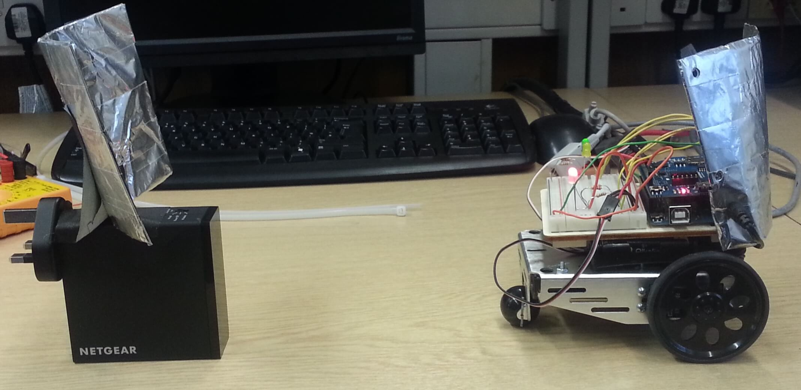

WiFi Guide
- C
- Arduino

Concept
 At the beginning initial sequence is launched which checks signal 16 times, twice every 45 degrees to determine where to start the search. After that initial scan and movement it goes back to more primitive algorithm which is comparing previous and current signal and if the signal is getting worse turn right if not go straight.
At the beginning initial sequence is launched which checks signal 16 times, twice every 45 degrees to determine where to start the search. After that initial scan and movement it goes back to more primitive algorithm which is comparing previous and current signal and if the signal is getting worse turn right if not go straight.
Components:
- Arduino Uno with breadboard
- 2x Parallax continuous servo and chassis
- RGB LED
- 1x Green, 1x Yellow LED
- 2x 5 AA battery holders
Development
The robot program was developed incrementally. First most core parts such as control of servos and getting RSSI values since without them I would not be able to pursue further this project. After that controls of LEDs and RGB LED and the logic behind finding the source of signal. Parts the project was divided into:
- Control of servos
- Control of LEDs / RGB LED
- Getting RSSI from WiFi shield
- Creating scanning routine and getting to the source of signal
The main logic of the bot:
void loop() {
if(ssidFound){
if(!sourceFound){
stayStill();
delay(500);
updateRSSI();
if(rssi>-36&&prevRssi>-45){//Source found
stayStill();
detachServos();
sourceFound = true;
digitalWrite(greenLed, HIGH);
Serial.print("Source found.");
Serial.println();
}
if(prevRssi>rssi){
turnRight();
goStraight();
delay(2000);
}else{
goStraight();
delay(2000);
}
}
}else if(!ssidFound&&!sourceFound){//Signal lost check it again
ssidStatus();
if(ssidFound){//If signal was found again rescan the area
scan();
goStraight();
delay(6000);
stayStill();
updateRSSI();
}else{
stayStill();
}
}
milis = millis();
if(milis-prevMilis>60000){//Check WiFi every minute
ssidStatus();
prevMilis = millis();
}
}